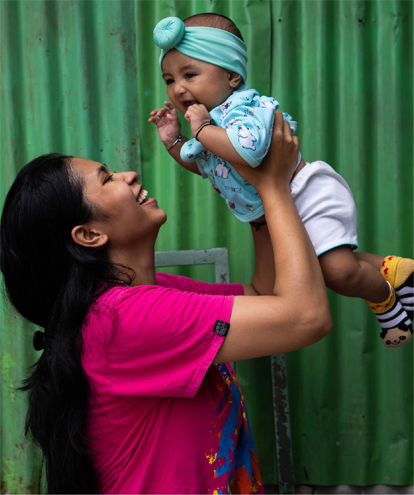

United Nations In Indonesia
Country Results Report 2021
Food Security and Better Nutrition


Food supply chain disruptions and the loss of income during the COVID-19 pandemic contributed to an increase in undernourishment in Indonesia, which afflicted 8.34% of the population in 2020, up from 7.63% in 2019, according to Indonesia’s 2021 Voluntary National Review. However, undernourishment was prolific even before the pandemic, with about a quarter of Indonesian children stunted as a result. Although that figure reflects considerable progress on the 37.2% prevalence rate in 2013, it falls far short of the 14% stunting prevalence target outlined in Indonesia’s National Mid-Term Development Plan 2020-2024.
Despite the pandemic’s adverse impacts, the Government’s UN-supported expansion of the social safety net led to a slight reduction in food insecurity, from 5.42% on the Food Insecurity Experience Scale in 2019 to 5.12% in 2020. The aid targeted interventions, the UN provided technical assistance to the Ministry of Agriculture that resulted in the finalisation of one national and five provincial Food Security and Vulnerability Atlases (FSVA). These atlases identified that 70 of the 514 regencies in target provinces were vulnerable to food insecurity due to poverty and the inability of local production to meet consumption needs. They nformed several country-wide programmes, including the Sustainable Food Yard, Family Farming, Farming Corporation Development and Community Food Barn. The Ministry of Village, Development of Disadvantaged Regions and Transmigration and various local governments have utilised the granular data provided in the atlases to inform targeted relief programs and village-level stunting reduction interventions.
To enhance the Government’s efforts in addressing food security during crises such as COVID-19, the UN and the Bogor Agricultural University conducted a study to assess the methodology of the national Food and Nutrition Surveillance System. The study found a positive correlation between the average length of schooling of women or girls over 15 years and household food security. The study also recommended several methodological improvements to monitor and detect risks of food insecurity during and after crises, which the Food Security Agency plans to implement in 2022. Meanwhile the UN finalised and disseminated a multi-sectoral survey assessing the impact of COVID-19 on food security, diet quality, and access to essential services among poor urban communities in Jakarta, which offered recommendations for improving access to nutrition and social protection services for vulnerable families.
The UN also expanded the evidence base to support decision-making on policies to improve the availability of affordable healthy diets. A UN “Fill the Nutrient Gap” analysis examined the underlying drivers of geographic variation in the percentage of households able to afford low-cost nutritious diets. The analysis provided recommendations to improve access to an affordable nutritious diet through existing government platforms and policy changes.
To address widespread micronutrient deficiencies, the Government has set a target to ensure access to fortified rice (bio- and post-harvest fortified) for poor and malnourished families by 2024. In 2021, the UN together with the Government launched the Rice Fortification Landscape Analysis, which mapped current rice production and trade and provided the basis for developing a sustainable and financially feasible model of production and distribution of fortified rice in Indonesia through social protection programmes and the retail market.
To support Indonesia’s National Stunting Reduction movement, the UN initiated a landmark project to develop operational guidelines on the planning, budgeting, implementing, and monitoring of eight essential nutrition interventions. Meanwhile, the UN worked to strengthen the National School Health Programme and took steps to digitise education materials related to nutrition for adolescents, primary school children, parents, and teachers as part of a wider initiative to promote lifelong positive dietary behavioural change and improve the nutritional status of Indonesia’s children during their first 8,000 days of life. The materials—which the Government has made publicly accessible—promote gender equality in the household, for example, men’s involvement in nutritious meal preparation. Additional advocacy campaigns aimed to improve knowledge and develop positive attitudes among adolescents to break the intergenerational cycle of malnutrition. For example, the UN observed World Obesity Day for the first time in Indonesia in 2021, with messages on obesity prevention shared via social media.
Alongside the Ministry of Health, the UN also enhanced the Government’s Healthy Living Community Movement (GERMAS) flagship platform through the launch of a digital behaviour change communication campaign called #KerenDimakan. The campaign was designed to develop positive attitudes to nutrition among adolescents to break the intergenerational cycle of malnutrition.
Finally, 2021 was a milestone for the prevention of wasting, which affects 7.1% of Indonesian children. The Indonesian government officially launched the UN’s Framework and Operational Roadmap of the Global Action Plan on child wasting, with the UN guiding the government through the Nutrition for Growth commitment-making process.